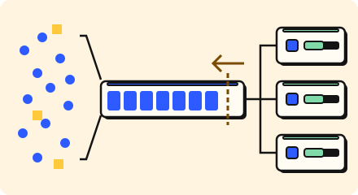

Work later · 3 minutes
Waiting instead of breaking
A queue lets a burst wait in line instead of crashing the thing behind it.
Open this lesson
A line at the bakery
If work arrives faster than it can be done, you can drop it or make it wait. A queue is the line. The sender says "got it" at once, and workers take items at their own pace. Waiting is better than breaking, as long as the line does not grow forever.
Backpressure
A queue buys time only when it can eventually drain. Admit more than the workers can serve, then bound the waiting work.
Try the idea
A burst of writes is more than the database can take. Put a queue and workers in front of it. Acceptance means the queue took the job, not that it finished. Completion lag shows the oldest waiting job; expiry risk compares its age with the job deadline. The model tracks traffic as rates rather than individual jobs.
Key numbers
- Standard queue
- ≈ 100,000 messages a second. managed, approx.
- Database writes
- ≈ 2,000 a second. one SQL primary, approx.
- Backlog of 1 million at 2,000 a second
- ≈ 8 minutes to clear. With no new arrivals: 1,000,000 / 2,000 / 60 ≈ 8.3 minutes.
- 1,500 arrivals and 2,000 completed a second
- ≈ 33 minutes to clear 1 million. Net drain is service minus arrivals: 2,000 - 1,500 = 500 jobs a second. Time to clear = backlog / (service rate - arrival rate), so 1,000,000 / (2,000 - 1,500) / 60 ≈ 33.3 minutes. At equal rates the backlog stays; with more arrivals it grows.
Check your reasoning
Think through these questions before opening the lesson. In the game you can test the idea and compare your reasoning.
- What does a queue buy you?
- The queue grows all day and never shrinks. What now?
- What is backpressure?
The key point
Queues turn spikes into waiting; backpressure stops the waiting from growing forever.
Practise this idea
- Medium
Notification service
Every other team asks you to send messages: order shipped, new login, a sale starting. You send them by push, email and text through outside providers who have their own limits. Send each message once, and never block the team that asked.
- Hard
Scheduled job service
Customers register jobs: "call my web address every night at 02:00" or "every hour on the hour". Aim to fire within 5 seconds; work still waiting after 60 seconds counts as failed. Retry safely after a crash. One external effect requires the customer endpoint to honor a stable job occurrence key. Half the world picks the top of the hour, so a huge crowd of jobs comes due in the same second.
- Hard
Video upload pipeline
Creators upload videos that must be converted into several qualities before anyone can watch. Conversion is slow, costs real money per video, and the converter sometimes fails on a broken file. Nothing a creator uploads can be lost.
- Easy
Invoicing and billing
Small businesses create invoices, email them to customers and take card payments online. On the last working day of the month everyone sends and chases invoices at once. Nobody may get the same invoice email twice, and no invoice may vanish.